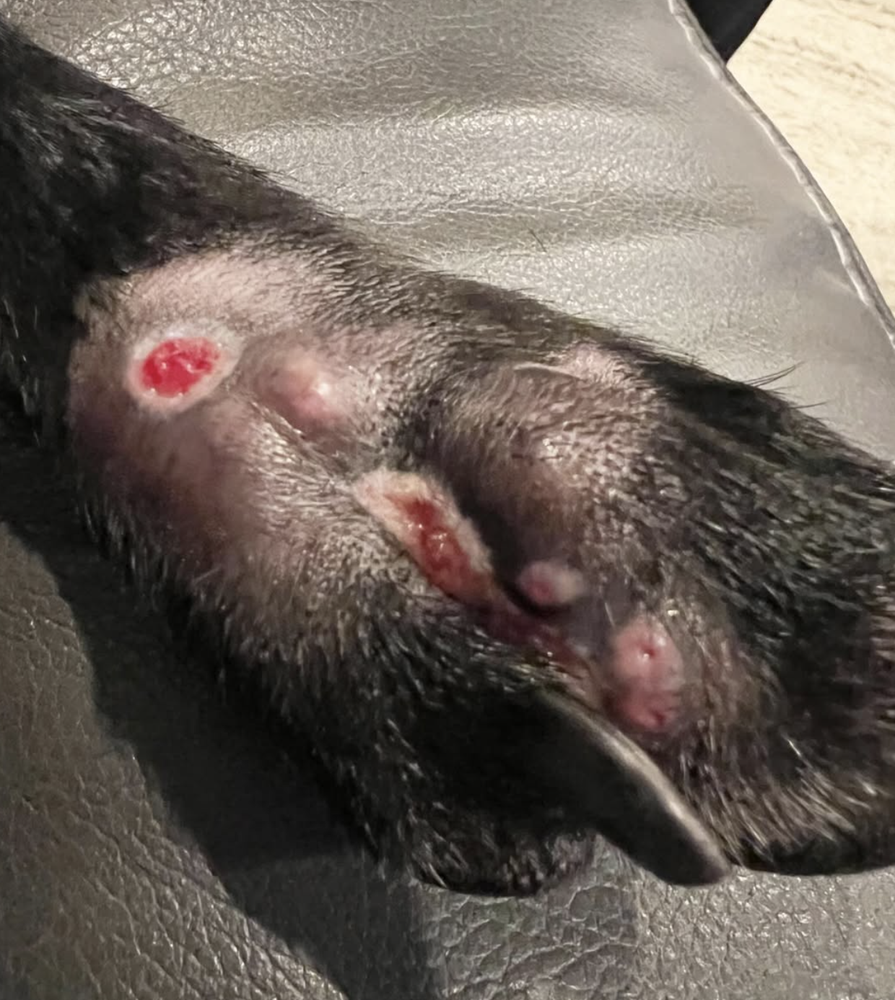

Episode 35 · March 24, 2025 · 3492
(EP:35) Marsh Foot & Keeping An Eye On Your Dog In & Around the Marsh with Jeff Christensen

About This Episode
In this episode I sit down with Jeff Christensen and talk about his experience in the marsh with his dog Sage. She got "Marsh Foot" and it almost took her life. Listen in on things and how to watch out for and keep an eye out for this infection that seems to be getting more popular. Enjoy!
Questions about the training topics in this episode? Tyce works with bird dog owners and hunters through Utah Bird Dog Training. Reach out to work with him directly.
Resources & Links
- Kuranda Dog Beds — Elevated, chew-proof dog beds.
- Utah Bird Dog Training — Tyce's professional training services.
Transcript
Full transcript for Episode 35: (EP:35) Marsh Foot & Keeping An Eye On Your Dog In & Around the Marsh with Jeff Christensen.
Tyce
Hey everyone, welcome to the Bird Dog Podcast. I've got my good friend Jeff Christensen on today. Jeff and I have been working together for about eleven years — he got his first dog through a referral from Jared Matson down in St. George and we've been working together ever since. Today we're going to talk about something that happened to his dog Sage out in the marsh this duck season. It's a topic I hadn't encountered before, and I think it's important enough that I wanted to get Jeff on to share the whole story. Jeff, welcome to the show.
Jeff
Thanks Tyce, appreciate it. For context on Sage — she's a pointing lab I got from Tyce out of his female River. She had her foundation training, then I sent her back for advanced handling work, and she's been great for duck hunting. We're out in the marsh with an airboat quite a bit. I don't want to be chasing down cripples knee-deep in mud. Having a dog that can handle and get sent on blind retrieves has been a completely different experience.
Tyce
Tell us what happened this past December.
Jeff
We were way out in the marsh — my buddy with the airboat, set up a blind, had a great day. Sage was on a dog stand behind the blind where she could see the birds. She hunted hard all day, picked up every bird. At the very end of the day I noticed her foot was badly swollen. I thought she'd stepped on something and cut herself — you know, stuff happens out in the marsh with all the debris and cover. But within the time it took me to load everything up and drive home, she went from having a swollen foot to being clearly lethargic. Not herself. Moving slow.
By that night the swelling had moved up her leg past the elbow. The foot itself was starting to blister. I called the vet on the drive home and got her in first thing the next morning. By then she could barely stand.
Tyce
What did the vet say?
Jeff
He took one look at it and said he'd seen this a few times — called it marsh foot. He asked if we'd been out in cattail frag, the dry cattail stalks. I said yes. He explained that the frag has microscopic edges almost like razor blades, and when a dog pushes through it and gets a cut, those tiny edges drive deep into the pad along with mud and bacteria from the marsh. He initially suspected a staph infection. He sedated her, cleaned out the wound, removed fragments and packed-in mud, left the wound open to drain. She wore a cone for weeks.
After about a week on antibiotics, one foot was getting better. But the worst one blew up again. He wanted to run pathology. Turned out it wasn't staph — it was a bacterial infection called Nocardia, which is resistant to the antibiotics she'd been on. Once they identified the right antibiotic, she was on a heavy course for six weeks. She made a full recovery. The vet told me that if I hadn't gotten her in when I did — within a day or two — she probably wouldn't have made it. That's a healthy three-year-old dog.
Tyce
What should hunters know going into the season?
Jeff
When you get out of the marsh, check your dog. Feet, pads, between the toes — look at everything. If you see a cut or puncture, flush it out with iodine and clean water right there. Don't just drive home and assume it'll be fine. In the marsh environment you have mud, bacteria, cattail frag — a small wound can go bad very fast. And I mean fast. What looked like a sore foot at the end of the day was a life-threatening infection by the next morning. Keep a first aid kit in the truck. Have iodine. If you see swelling moving up the leg, don't wait for Monday — get the dog to an emergency vet.
Tyce
One other thing worth mentioning while we're on marsh hazards: blue-green algae, also called cyanobacteria. It blooms in warm, stagnant water and is highly toxic to dogs. There was an incident at a local training spot in Utah where a hunter lost multiple dogs after they ingested algae bloom. If you're doing water work in summer and early fall, bring fresh water for your dog and water them before they hit the marsh so they're not parched and drinking whatever they can find. If you see green or blue-green slick on the water surface, keep your dog out.
Jeff, thanks for coming on and sharing this. Nobody wants to lose a good dog to something that's preventable with a little awareness.
Jeff
Thanks Tyce. I hope it helps someone out there. Check your dogs, keep iodine handy, and get to a vet fast if something doesn't look right. Good luck out there this season.
About the Host
Tyce Erickson
Tyce Erickson is a professional bird dog trainer and the owner of Utah Bird Dog Training in Utah. For nearly two decades he has worked with pointing dogs, retrievers, and family hunting dogs — helping owners build dogs that are capable and enjoyable in the field. The Bird Dog Podcast is an extension of that work: honest conversations on training, hunting, breeding, and everything that goes into a life spent working dogs.
More About Tyce